Funktionen
Jede Seite in ATLAS hat eine Aufgabe. Hier steht, was sie macht und wie sie aussieht. Alle Bilder stammen aus der Demo.
Projekte und Bereiche
ATLAS kennt jedes Projekt aus catalog.json und scannt dessen Ordner. Projekte gehören zu Bereichen, Bereiche können Unterbereiche haben, zum Beispiel Schule › Module › Modul 346.
- ScannerDateien, Grösse, Codezeilen pro Sprache, letzte Änderung und Git-Branch.
- VorschaubilderScreenshot der Website, Folie 1, erste Seite eines PDFs oder eine Code-Karte.
- SucheCtrl K findet Projekte, Dateien und Text im Code.
- UnsortiertNeue Ordner werden gemeldet, bis sie einem Projekt gehören.
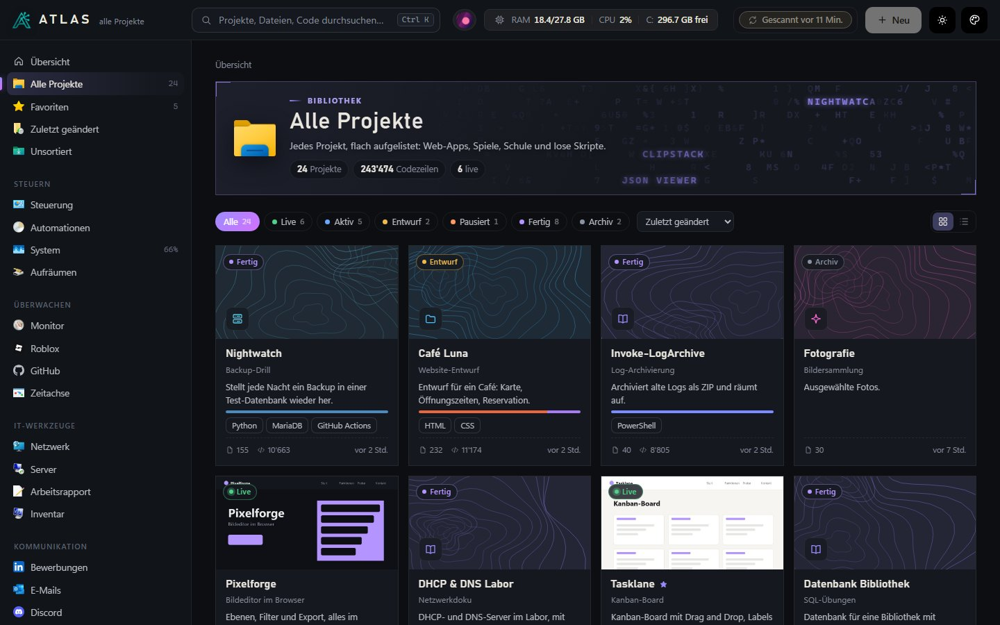
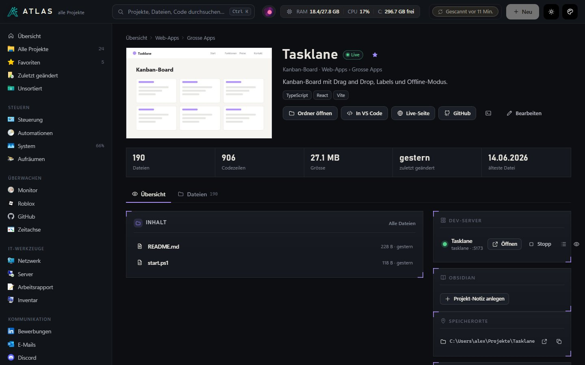
Office-Sammlungen
PowerPoint, Word, Excel, Visio und Packet Tracer liegen oft verstreut in Downloads, OneDrive und Dokumente. ATLAS sammelt sie automatisch und sortiert sie nach Regeln in Bereiche wie «Präsentationen › Schule › Modul 188».
- Versionen zusammenfassen«Präsentation_final», «_v2» und «_backup» werden ein Eintrag.
- VorschauFolie 1 und Word-Seite 1 werden über Office selbst gerendert.
- GrossansichtAlle Folien einer Präsentation durchblättern, ohne PowerPoint zu öffnen.
- Echte SymboleDie Programm-Symbole kommen direkt aus den installierten Programmen.
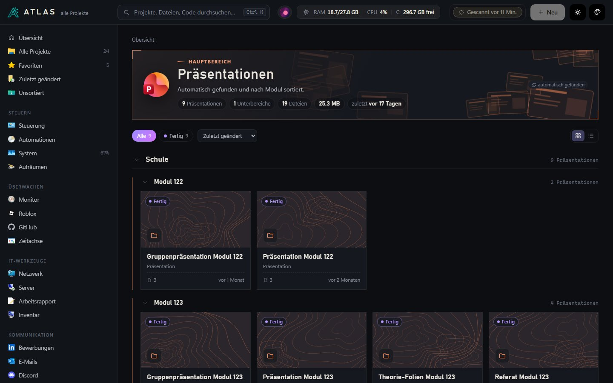
Steuerung
Die Dev-Server kommen aus .claude/launch.json. Jeder lässt sich starten, stoppen und im Browser öffnen, das Log ist einen Klick entfernt.
- Dev-ServerStart, Stopp, Log und Vorschau pro Projekt.
- VMs und WSLVirtualBox-Maschinen und WSL-Distributionen ein- und ausschalten.
- MusikWas gerade läuft, mit Cover, über Windows oder die Spotify-API.
- SchnellaktionenSperren, Energiesparen, Papierkorb leeren, Downloads sortieren.
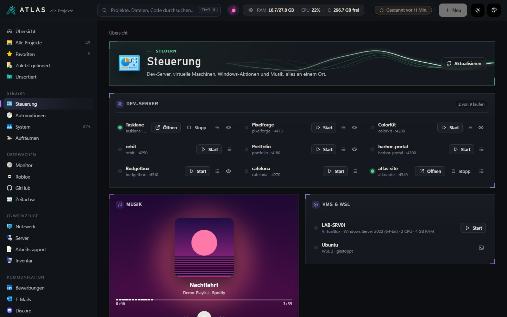
Automationen
Regeln nach dem Muster «wenn … dann …». Eine Regel meldet sich nur, wenn sich etwas ändert: eine Seite, die down bleibt, meldet sich einmal und erst wieder, wenn sie zwischendurch online war.
- AuslöserSeite down oder wieder da, Pipeline rot, Zeitplan, RAM voll, Akku leer, Zertifikat läuft ab.
- AktionenWindows-Meldung, Discord-Nachricht, Server starten oder stoppen, App öffnen.
- VorlagenZehn fertige Regeln zum Übernehmen.
- VerlaufJede ausgelöste Regel mit Zeit und Ergebnis.
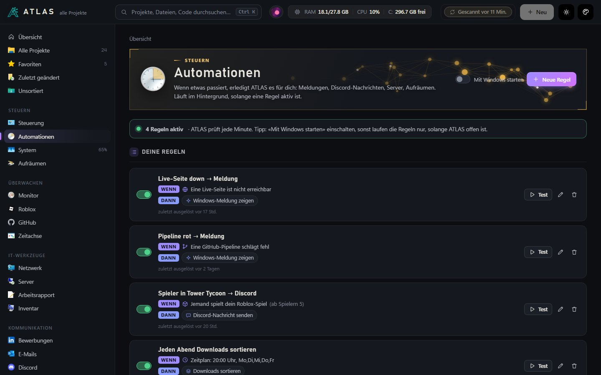
Monitor und GitHub
Alle fünf Minuten prüft ATLAS die Live-Seiten und die GitHub-Actions der eigenen Repositories. Zertifikate und eigene Ablaufdaten wie Lizenzen oder Tokens stehen daneben.
- UptimeAntwortzeit und Verlauf der letzten Prüfungen pro Seite.
- PipelinesStatus jedes Workflows mit Branch und Zeit.
- ZertifikateRestlaufzeit als Ring, Warnung vor dem Ablauf.
- GitHubRepositories, Sterne, letzte Commits.
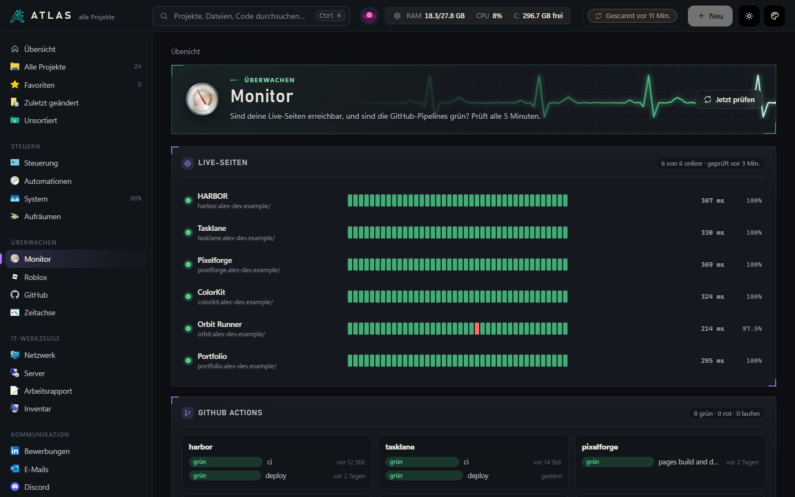
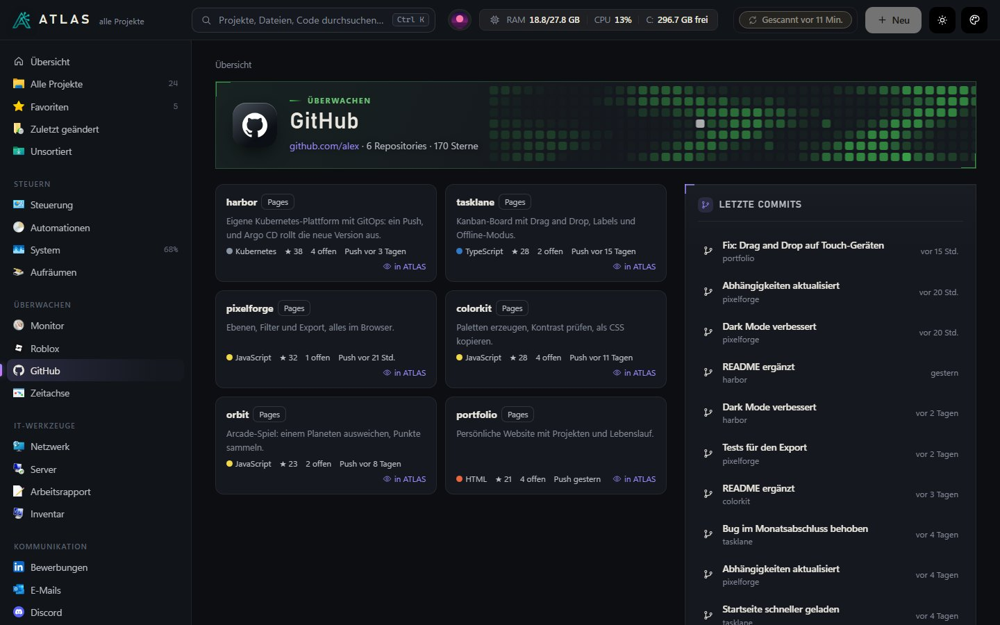
System
Prozessor, Arbeitsspeicher, Laufwerke, Netzwerk und Akku, alle zwei Sekunden aktualisiert. Die grössten Prozesse stehen darunter.
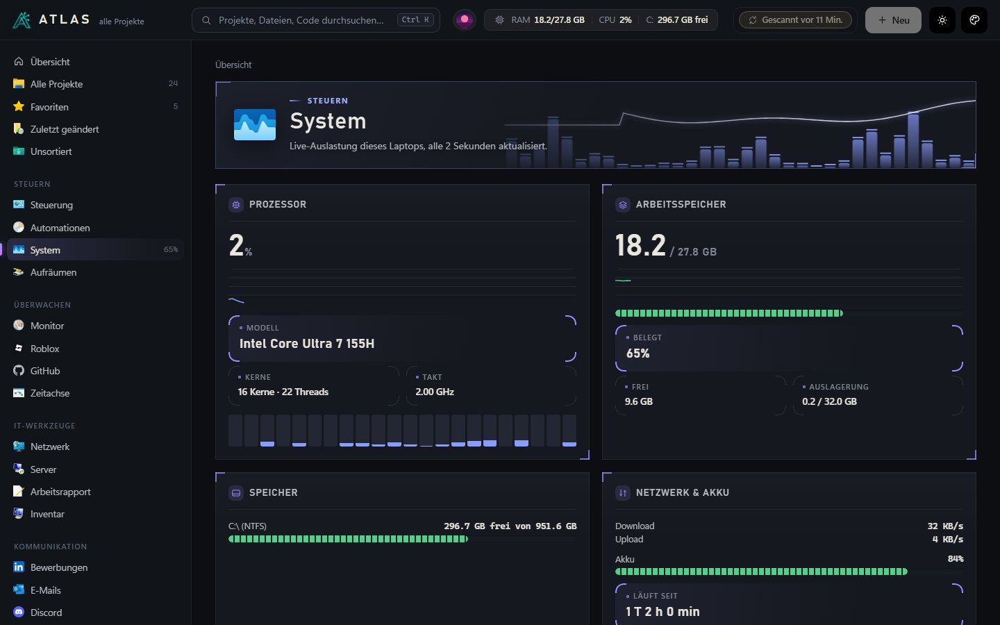
Netzwerk und Server
Die Werkzeuge, die man im IT-Alltag ständig braucht, ohne Kommandozeile. Das Server-Verzeichnis speichert nur Adresse und Benutzer, nie Passwörter.
- VerbindungInternet, Router und Laptop als Kette, mit IP, Gateway, DNS und WLAN.
- WerkzeugePing, Traceroute, Port-Check, DNS-Abfrage, Subnetz-Rechner, Wake-on-LAN.
- Netz-ScanNur in Netzen, die man selbst als eigenes bestätigt hat. Schul- und Firmennetze sind gesperrt.
- ServerSSH im Windows Terminal, Remote Desktop oder Weboberfläche mit einem Klick.
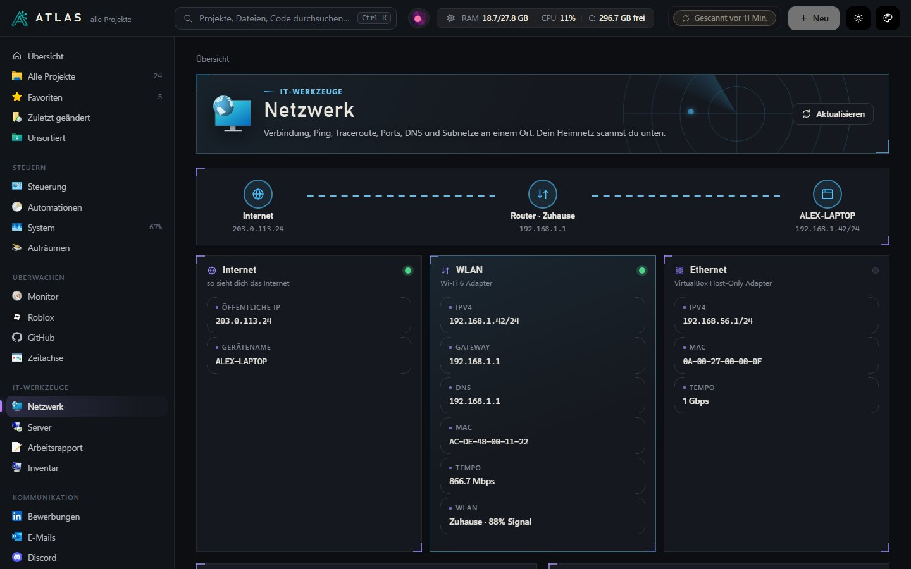
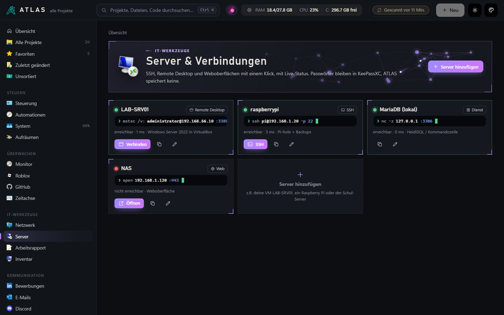
Arbeitsrapport
Für die Lehre muss jede Woche ein Rapport geschrieben werden. ATLAS sammelt dafür, was in der Woche passiert ist: geänderte Dateien pro Projekt, Commits auf GitHub und Notizen aus Obsidian.
- StundenGeschätzt aus den Änderungen: weniger als 45 Minuten Abstand gilt als eine Sitzung.
- VorschlagPro Tag ein Satz, der übernommen oder überschrieben werden kann.
- ExportAls Word-Datei oder als Notiz in Obsidian.
- WochenZurück und vor blättern, jede Woche bleibt gespeichert.
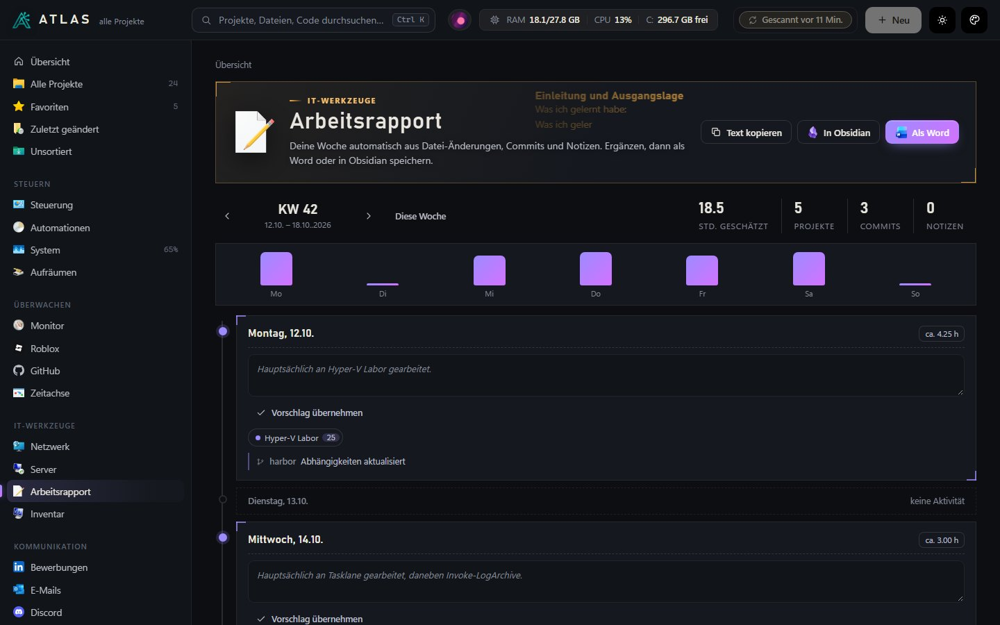
Inventar
Eine Systemdokumentation des eigenen Geräts auf Knopfdruck: Hardware, Netzwerk, Firewall und Virenschutz, lokale Konten, offene Ports, WSL und VMs sowie installierte Software. Der Export als Word ist für Projektwochen und Prüfungen gedacht.
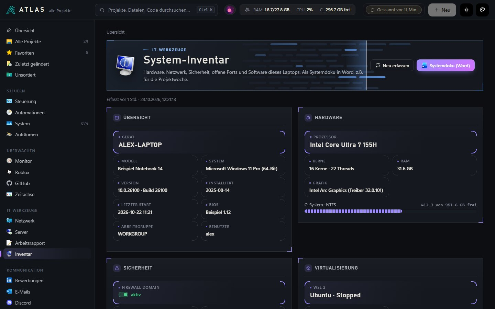
Darstellung
Unter Darstellung lassen sich Hell und Dunkel, fünf Akzentfarben, die Grösse von 90 bis 125 Prozent, mehr Kontrast und weniger Bewegung einstellen. Die Startseite kann ein eigenes Bannerbild bekommen.
Vor jeder grösseren Änderung an der Oberfläche wird der alte Stand gesichert. Unter «GUI-Versionen» lässt er sich mit einem Klick zurückholen.
Alle Versionen ansehen